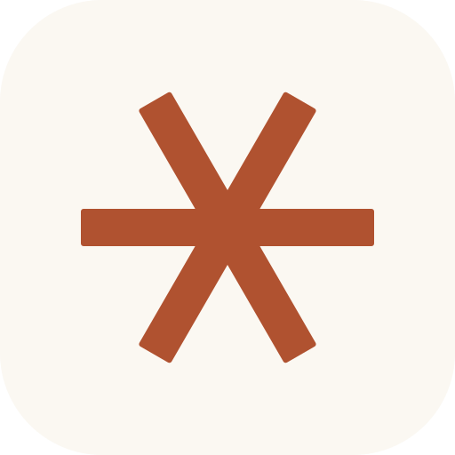
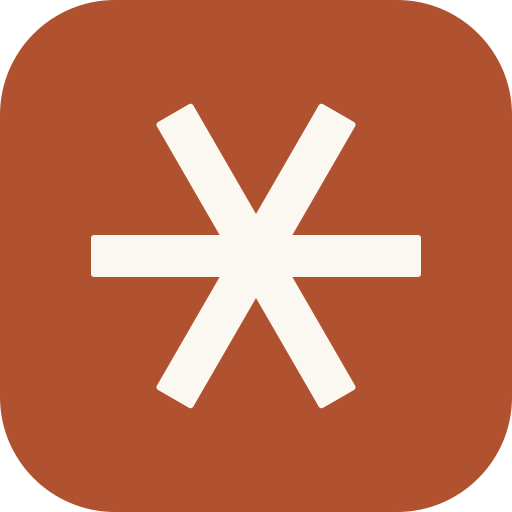
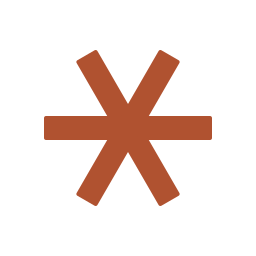

NAMED · IDENTITY 01
Every word has a story.
A lowercase serif wordmark with a terracotta footnote. The asterisk is the mark of the story behind the word — and, on its own, the app icon.
APP ICON

Paper · primary

Terracotta · alternate
The mark is the footnote, scaled down to an app icon. Paper keeps it quiet; terracotta makes it a warmer presence in a home-screen grid.
IN THE APP
watering can
ˈwɔː.tər.ɪŋ kæn

A story attached.
Grandma’s tomatoes, summer 2024.
On a word card, the asterisk quietly says: there is more here than the definition.
LOCKUPS
Horizontal
Stacked
Ink #232A31
Terracotta #B05230
Paper #FBF8F2
Cobalt #2F4A6B · UI